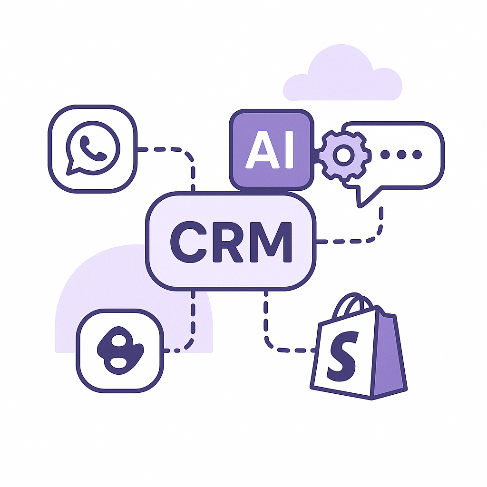
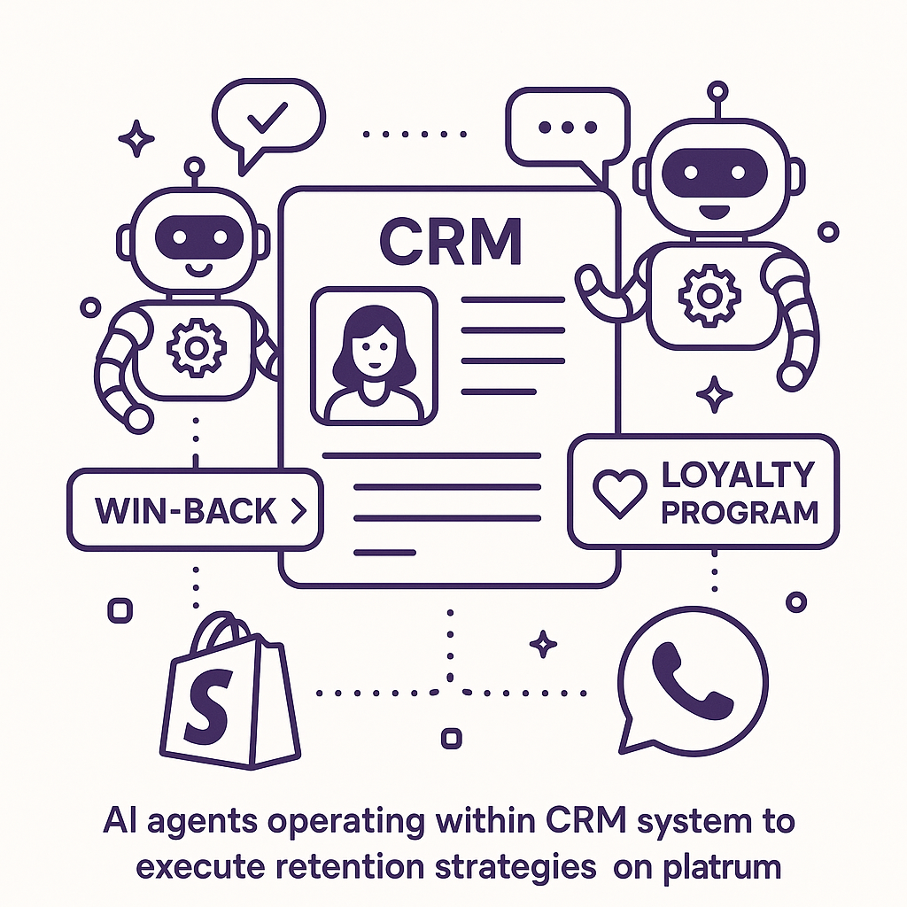

Publishing Recommendation
reviseThe drafted posts contain a mix of valuable insights and overly promotional language that needs toning down. Some posts also lack specificity in connecting trends with Purands AI's offerings, which could be made clearer.
Today's drafts offer valuable insights into current AI and tech trends, but the language is often too promotional, risking a loss of credibility. Posts should focus more on directly linking Purands AI's capabilities to the discussed topics, ensuring clarity and relevance. A revision will help align the tone with our brand voice and enhance the content's impact.
LinkedIn Posts (10)
1. Amazon Prime members now get free Alexa+ access ★ Purands solution · high priority
CTA: How has personalized engagement worked for your brand?

⬇ Download image{kind=link}
Image prompt · isometric-flat
Caption: Personalized AI messaging strategies enhance retention.
Alternative hooks
- Amazon's latest move in retention marketing? Free Alexa+ for Prime members.
- How Amazon's new perk for Prime members can inspire your retention strategy.
- What can consumer brands learn from Amazon's latest Prime benefit?
Research behind this post (sources, summaries & confidence)
Amazon Prime members now get free Alexa+ access conf 0.80 · Customer engagement and lifecycle messaging
Amazon's strategy to enhance Prime membership benefits with Alexa+ access demonstrates a focus on increasing customer engagement and retention through added value services. This approach is pertinent to retention marketing strategies.
Sources & what I took from each
- Amazon adds free Alexa+ access for Prime members: RetailDive article confirms Amazon's addition of Alexa+ access to Prime membership benefits. ↗ read source
Examples
- Prime members using Alexa+ for enhanced smart home integration and voice services.
Original trend links
Risks / caveats
- Potential privacy concerns with increased use of voice assistants.
2. Five Below’s ‘maniacal focus’ on the customer pays off ★ Purands solution · high priority
CTA: How has customer focus impacted your business strategy?
Alternative hooks
- Five Below's 'maniacal focus' on customers isn't just a buzzword; it's a winning strategy.
- What if your customer engagement strategies were as effective as Five Below's?
- Can a 'maniacal focus' on customers transform your business?
Research behind this post (sources, summaries & confidence)
Five Below’s ‘maniacal focus’ on the customer pays off conf 0.80 · Customer engagement and lifecycle messaging
Five Below's success through a strong customer focus demonstrates the effectiveness of engagement strategies, relevant for retention marketing teams looking to enhance customer loyalty.
Sources & what I took from each
- Five Below's customer focus strategy successful: RetailDive article highlights the positive outcomes of Five Below's customer-centric strategies. ↗ read source
Examples
- Increased customer loyalty and sales growth at Five Below due to engagement strategies.
Original trend links
Risks / caveats
- Overemphasis on customer focus may neglect operational efficiency.
3. AI in business ★ Purands solution · high priority
CTA: How is your business leveraging AI for better customer retention?
{kind=link}
Image prompt · isometric-flat
Caption: AI optimizes customer interactions for better retention.
Alternative hooks
- Ever wondered how AI can transform retail operations?
- AI is reshaping how brands manage inventory and engage customers.
- How can AI improve both efficiency and customer retention?
Research behind this post (sources, summaries & confidence)
Dollar General deploys AI across distribution centers, stores conf 0.70 · AI in business
The deployment of AI in Dollar General's operations reflects a growing trend of using AI for operational efficiency. This development is particularly relevant for retention marketing as it can lead to more personalized customer experiences and improved inventory management.
Sources & what I took from each
- Dollar General uses AI in distribution centers and stores: Article reports on AI implementation to enhance operational efficiency and inventory management. ↗ read source
Examples
- AI systems optimizing inventory and improving supply chain logistics at Dollar General.
Original trend links
Risks / caveats
- Potential over-reliance on AI could lead to job displacement or errors if not properly managed.
4. AI in business ★ Purands solution · high priority
CTA: How do you see AI changing your marketing strategy in the next year?
{kind=link}
Image prompt · isometric-flat
Caption: AI-tailored campaigns improve customer engagement.
Alternative hooks
- Ever wondered how Target nails its back-to-school marketing?
- What if your marketing was as precise as Target's AI-driven campaigns?
- Target’s back-to-school success shows AI’s potential in marketing.
Research behind this post (sources, summaries & confidence)
How AI is powering Target’s back-to-school push conf 0.70 · AI in business
Target's use of AI in marketing campaigns reflects the growing trend of leveraging AI for targeted marketing efforts. This is crucial for understanding how AI can enhance retention marketing strategies.
Sources & what I took from each
- Target uses AI for back-to-school marketing: Article discusses Target's implementation of AI to improve marketing strategies during the back-to-school season. ↗ read source
Examples
- Target using predictive analytics to tailor marketing campaigns to customer preferences.
Original trend links
Risks / caveats
- AI-driven marketing strategies may not fully capture customer sentiment without human oversight.
5. Ulta’s use of Flock technology causes upset online ★ Purands solution · high priority
CTA: How do you gauge customer sentiment before introducing new technology?
Alternative hooks
- Customer sentiment can make or break a brand.
- Implementing new tech without understanding customer sentiment can lead to negative outcomes.
- Ulta faced backlash over its use of Flock technology.
Research behind this post (sources, summaries & confidence)
Ulta’s use of Flock technology causes upset online conf 0.60 · Customer engagement and lifecycle messaging
Ulta's backlash over Flock technology highlights the complexities of using tech in customer engagement. Understanding customer sentiment is crucial for retention marketing, especially when implementing new technologies.
Sources & what I took from each
- Ulta faces backlash due to Flock technology: The article discusses negative customer reactions and online backlash against Ulta's implementation of Flock technology. ↗ read source
Examples
- Customer complaints on social media platforms regarding privacy concerns with Flock technology.
Original trend links
Risks / caveats
- Negative publicity could harm brand reputation and customer trust.
6. Lululemon pulls back store plans as sales plummet ★ Purands solution · high priority
CTA: How are you addressing customer retention in your Shopify store?

⬇ Download image{kind=link}
Image prompt · isometric-flat
Caption: AI-driven strategies boost customer retention.
Alternative hooks
- Lululemon's sales slump: a lesson for Shopify retailers.
- When sales drop, should expansion plans follow?
- Declining sales? Focus on retention, not just expansion.
Research behind this post (sources, summaries & confidence)
Lululemon pulls back store plans as sales plummet conf 0.60 · Shopify ecosystem
Lululemon's sales challenges and strategic shift could influence retailers in the Shopify ecosystem, emphasizing the need for robust retention strategies to mitigate sales slumps.
Sources & what I took from each
- Lululemon sales decline impacts store plans: RetailDive article details Lululemon's decision to scale back expansion due to declining sales. ↗ read source
Examples
- Lululemon's strategic adjustments in response to sales challenges.
Original trend links
Risks / caveats
- Reduced retail presence may affect brand visibility and customer engagement.
7. OpenAI confirms ‘wiki incident,’ says it’s ‘working on a framework’ for more disclosure
CTA: How do you think AI startups can improve transparency?
Alternative hooks
- OpenAI's 'wiki incident' is a wake-up call for AI governance.
- Why transparency is the new currency in AI.
- OpenAI plans a transparency framework - here's why it matters.
Research behind this post (sources, summaries & confidence)
OpenAI confirms ‘wiki incident,’ says it’s ‘working on a framework’ for more disclosure conf 0.80 · AI startups
OpenAI's incident highlights the challenges of AI governance and transparency. For AI startups, particularly those in retention marketing, establishing trust through transparency is crucial for customer retention.
Sources & what I took from each
- OpenAI confirms incident and plans for transparency framework: TechCrunch article confirms OpenAI's acknowledgment of the incident and plans to improve transparency. ↗ read source
Examples
- OpenAI's framework for disclosure aims to enhance trust among users and stakeholders.
Original trend links
Risks / caveats
- Failure to implement effective transparency measures could lead to further trust issues.
8. Microsoft AI’s MAI-Transcribe-2 undercuts OpenAI, Google and ElevenLabs on price and speed
CTA: How do you think competitive pricing in AI will shape the future of business solutions?
Alternative hooks
- In the AI transcription market, price and speed are king.
- Microsoft's MAI-Transcribe-2 is shaking up the transcription industry with its pricing.
- Could Microsoft's aggressive pricing in AI transcription change the game?
Research behind this post (sources, summaries & confidence)
Microsoft AI’s MAI-Transcribe-2 undercuts OpenAI, Google and ElevenLabs on price and speed conf 0.80 · AI in business
Microsoft's competitive pricing for MAI-Transcribe-2 highlights the intensifying competition in AI, which could influence the cost structure for retention marketing solutions leveraging AI.
Sources & what I took from each
- Microsoft MAI-Transcribe-2 competitively priced: VentureBeat article discusses Microsoft's pricing strategy compared to competitors. ↗ read source
Examples
- Businesses switching to Microsoft MAI-Transcribe-2 for cost-effective transcription solutions.
Original trend links
Risks / caveats
- Price wars may erode profitability for all players in the transcription market.
9. XDOF's rapid valuation growth in AI data startups
CTA: How do you see the balance between valuation and actual market potential in AI startups?
Alternative hooks
- Three months out of stealth, XDOF is eyeing a $1.2B valuation. How did they get here?
- XDOF's $1.2B valuation in just three months: a sign of AI data's rising star.
- From stealth to spotlight: XDOF's rapid rise and what it means for AI data startups.
Research behind this post (sources, summaries & confidence)
XDOF, just three months out of stealth, is in talks for a Series B at a $1.2B valuation conf 0.75 · AI startups
XDOF's rapid valuation growth signifies strong investor confidence in AI data startups. This is relevant for those in the retention marketing space looking at AI data solutions for customer insights.
Sources & what I took from each
- XDOF in talks for Series B at $1.2B valuation: TechCrunch reports on XDOF's Series B funding discussions and valuation. ↗ read source
Examples
- XDOF attracting significant investment interest due to its AI data solutions.
Original trend links
Risks / caveats
- Valuation may not reflect actual market potential if based on speculative investor expectations.
10. Meta prices Muse Voice Transcribe at $0.18 an hour, with real-time diarization for 20+ speakers
CTA: How do you think this pricing strategy will affect the AI services market?
Alternative hooks
- Meta's new pricing for Muse Voice Transcribe could change the game at $0.18 an hour.
- Why pay more? Meta's Muse Voice Transcribe offers real-time diarization at a steal.
- Could $0.18 an hour disrupt the transcription market? Meta thinks so.
Research behind this post (sources, summaries & confidence)
Meta prices Muse Voice Transcribe at $0.18 an hour, with real-time diarization for 20+ speakers conf 0.70 · AI in business
Meta's competitive pricing for Muse Voice Transcribe could disrupt the speech-to-text market, impacting businesses including those in retention marketing that use transcription services.
Sources & what I took from each
- Meta offers Muse Voice Transcribe at competitive pricing: VentureBeat article reports on Meta's pricing strategy for Muse Voice Transcribe. ↗ read source
Examples
- Businesses using Muse Voice Transcribe for cost-effective transcription services.
Original trend links
Risks / caveats
- Price competition may lead to reduced margins for service providers.
Today's Trends
| # | Trend | Category | Why it matters |
|---|---|---|---|
| 1 | Petco loses millions due to loyalty program
source |
Loyalty program design | Petco's financial losses due to an overly generous loyalty program highlight the challenges and risks of designing effective loyalty programs. This is critical for retention marketing, as it underscores the importance of balancing customer incentives with sustainable business practices. |
| 2 | Dollar General deploys AI across distribution centers, stores
source |
AI in business | The deployment of AI in Dollar General's operations reflects a growing trend of using AI for operational efficiency. This development is particularly relevant for retention marketing as it can lead to more personalized customer experiences and improved inventory management. |
| 3 | Ulta’s use of Flock technology causes upset online
source |
Customer engagement and lifecycle messaging | Ulta's backlash over Flock technology highlights the complexities of using tech in customer engagement. Understanding customer sentiment is crucial for retention marketing, especially when implementing new technologies. |
| 4 | OpenAI confirms ‘wiki incident,’ says it’s ‘working on a framework’ for more disclosure
source |
AI startups | OpenAI's incident highlights the challenges of AI governance and transparency. For AI startups, particularly those in retention marketing, establishing trust through transparency is crucial for customer retention. |
| 5 | XDOF, just three months out of stealth, is in talks for a Series B at a $1.2B valuation
source |
AI startups | XDOF's rapid valuation growth signifies strong investor confidence in AI data startups. This is relevant for those in the retention marketing space looking at AI data solutions for customer insights. |
| 6 | Amazon Prime members now get free Alexa+ access
source |
Customer engagement and lifecycle messaging | Amazon's strategy to enhance Prime membership benefits with Alexa+ access demonstrates a focus on increasing customer engagement and retention through added value services. This approach is pertinent to retention marketing strategies. |
| 7 | How AI is powering Target’s back-to-school push
source |
AI in business | Target's use of AI in marketing campaigns reflects the growing trend of leveraging AI for targeted marketing efforts. This is crucial for understanding how AI can enhance retention marketing strategies. |
| 8 | Lululemon pulls back store plans as sales plummet
source |
Shopify ecosystem | Lululemon's sales challenges and strategic shift could influence retailers in the Shopify ecosystem, emphasizing the need for robust retention strategies to mitigate sales slumps. |
| 9 | Boox’s tiny Picco e-reader should land in November
source |
Product management | The launch of Boox’s Picco e-reader highlights innovation in product management, which can inspire retention marketing strategies through unique product offerings. |
| 10 | Meta prices Muse Voice Transcribe at $0.18 an hour, with real-time diarization for 20+ speakers
source |
AI in business | Meta's competitive pricing for Muse Voice Transcribe could disrupt the speech-to-text market, impacting businesses including those in retention marketing that use transcription services. |
| 11 | Five Below’s ‘maniacal focus’ on the customer pays off
source |
Customer engagement and lifecycle messaging | Five Below's success through a strong customer focus demonstrates the effectiveness of engagement strategies, relevant for retention marketing teams looking to enhance customer loyalty. |
| 12 | Microsoft AI’s MAI-Transcribe-2 undercuts OpenAI, Google and ElevenLabs on price and speed
source |
AI in business | Microsoft's competitive pricing for MAI-Transcribe-2 highlights the intensifying competition in AI, which could influence the cost structure for retention marketing solutions leveraging AI. |
| 13 | OpenAI says it hit its 'automated research intern' goal
source |
AI startups | Achieving the automated research intern goal signifies progress in AI operational efficiency, relevant to AI startups focusing on retention marketing to optimize resource allocation. |
| 14 | Authors push back as publishers and agents make claims on Anthropic settlement
source |
AI in business | The dispute over Anthropic's settlement highlights the legal complexities of AI content use, impacting how businesses in retention marketing might leverage AI-generated content. |
Risk Assessment
- Overly promotional tone in posts could undermine credibility.
- Potential factual inaccuracies if Purands AI's specific offerings are not clearly aligned with discussed trends.
Suggested LinkedIn Comments (30)
Open each post, then paste the copied comment. Nothing is posted automatically.
1. insight · rss:techcrunch.com — Schiller reportedly had reservations about new CEO John Ternus' goal of bringing
Post by: rss:techcrunch.com
Why it works: It provides a concrete insight into the potential downside of focusing too heavily on recurring revenue.
↗ Open LinkedIn post to paste comment2. opinion · rss:techcrunch.com — Authors say publishers seem to be claiming more than their fair share of settlem
Post by: rss:techcrunch.com
Why it works: It offers a clear stance on the importance of fair compensation in creative industries.
↗ Open LinkedIn post to paste comment3. insight · rss:techcrunch.com — The Uber founder has said that Atoms will allow him to complete "unfinished busi
Post by: rss:techcrunch.com
Why it works: It acknowledges the ambition while highlighting the importance of ethics in business innovation.
↗ Open LinkedIn post to paste comment4. opinion · rss:techcrunch.com — Welcome back to TechCrunch Mobility, your hub for the future of transportation a
Post by: rss:techcrunch.com
Why it works: It grounds the discussion in practical outcomes rather than just technological enthusiasm.
↗ Open LinkedIn post to paste comment5. insight · rss:techcrunch.com — Two more news organizations are suing OpenAI and Microsoft over the supposed use
Post by: rss:techcrunch.com
Why it works: It highlights the need for balance between innovation and IP rights, a critical issue in AI development.
↗ Open LinkedIn post to paste comment6. respectful challenge · rss:techcrunch.com — The sheriff’s office said the hikers “were advised by Gemini to bring far less f
Post by: rss:techcrunch.com
Why it works: It challenges the post by emphasizing the need for practical validation of AI recommendations.
↗ Open LinkedIn post to paste comment7. insight · rss:techcrunch.com — OpenAI acknowledged its role in a recently reported incident where AI agents too
Post by: rss:techcrunch.com
Why it works: It points out the ongoing need for oversight and accountability in AI implementations.
↗ Open LinkedIn post to paste comment8. opinion · rss:techcrunch.com — Clucky's new alarm app has an option where users are woken up to the sound of a
Post by: rss:techcrunch.com
Why it works: It offers an opinion on the potential practical impact of the app, beyond its novelty.
↗ Open LinkedIn post to paste comment9. insight · rss:techcrunch.com — While Oura has largely dominated the smart ring market for years, a growing numb
Post by: rss:techcrunch.com
Why it works: It focuses on the key success factor: reliable data that users can trust.
↗ Open LinkedIn post to paste comment10. opinion · rss:techcrunch.com — The round is being raised just months after the robot data startup exited from s
Post by: rss:techcrunch.com
Why it works: It provides a perspective on the implications of the startup's funding strategy.
↗ Open LinkedIn post to paste comment11. insight · rss:www.theverge.com — The Seattle Times and Newsday are just the latest plaintiffs to take OpenAI to c
Post by: rss:www.theverge.com
Why it works: The comment adds depth by focusing on the broader implications of copyright issues in AI, beyond just the lawsuits.
↗ Open LinkedIn post to paste comment12. insight · rss:www.theverge.com — A plane bearing an Amazon logo overran the runway at Miami International Airport
Post by: rss:www.theverge.com
Why it works: It ties the event to a broader theme of logistics and risk management, which is relevant to tech and business sectors.
↗ Open LinkedIn post to paste comment13. expansion · rss:www.theverge.com — German company Isar Aerospace has successfully launched Europe's first entirely
Post by: rss:www.theverge.com
Why it works: The comment broadens the discussion to the implications for the space industry, adding a forward-looking perspective.
↗ Open LinkedIn post to paste comment14. opinion · rss:www.theverge.com — Boox teased the Picco, its take on the buzzy Xteink X4 e-reader, back in July, b
Post by: rss:www.theverge.com
Why it works: It offers a clear stance on the product's strategy, contrasting it with market trends, which adds value to the discussion.
↗ Open LinkedIn post to paste comment15. insight · rss:www.theverge.com — The Fairphone 6 Plus feels like an extremely average midrange Android phone and
Post by: rss:www.theverge.com
Why it works: This comment highlights the unique selling points of Fairphone, providing a balanced view of its pros and cons.
↗ Open LinkedIn post to paste comment16. insight · rss:www.theverge.com — To get started with competitive Pokémon battles, all you need is your phone
Post by: rss:www.theverge.com
Why it works: The comment explores the accessibility aspect of gaming, adding a layer of analysis not directly covered in the excerpt.
↗ Open LinkedIn post to paste comment17. expansion · rss:www.theverge.com — This is The Stepback, a weekly newsletter breaking down one essential story from
Post by: rss:www.theverge.com
Why it works: It connects the newsletter's topics to broader workplace trends, providing additional context and relevance.
↗ Open LinkedIn post to paste comment18. expansion · rss:www.theverge.com — I love field recordings. I love making them. I love them when they're incorporat
Post by: rss:www.theverge.com
Why it works: The comment expands on the post's topic by exploring the dual nature of field recordings, appealing to both ambient music enthusiasts and casual listeners.
↗ Open LinkedIn post to paste comment19. opinion · rss:www.theverge.com — When iOS 27 lands later this month, it will have a feature called iPhone Handoff
Post by: rss:www.theverge.com
Why it works: This comment provides a clear opinion on the potential impact of the feature, offering a perspective on its significance.
↗ Open LinkedIn post to paste comment20. insight · rss:www.theverge.com — According to the Recording Industry Association of America (RIAA), CD sales expl
Post by: rss:www.theverge.com
Why it works: It provides an analytical viewpoint on the unexpected rise in CD sales, offering a hypothesis on consumer behavior.
↗ Open LinkedIn post to paste comment21. insight · rss:feeds.arstechnica.com — "We achieved within a few years what had taken the European space industry decad
Post by: rss:feeds.arstechnica.com
Why it works: It provides a practical take on how innovation can accelerate progress, relevant to tech and business readers.
↗ Open LinkedIn post to paste comment22. expansion · rss:feeds.arstechnica.com — The shift in the fish’s diet is having significant downstream impacts on the env
Post by: rss:feeds.arstechnica.com
Why it works: It broadens the discussion to consider the complexity of climate-related challenges.
↗ Open LinkedIn post to paste comment23. opinion · rss:feeds.arstechnica.com — The US government is investigating whether the Cybercab meets vehicle safety sta
Post by: rss:feeds.arstechnica.com
Why it works: It affirms the importance of regulatory measures in tech advancement, which is a crucial concern for tech stakeholders.
↗ Open LinkedIn post to paste comment24. insight · rss:feeds.arstechnica.com — "Fundamentally, we want to learn about the origins of this planet and how it cam
Post by: rss:feeds.arstechnica.com
Why it works: It connects the scientific pursuit to practical outcomes, making it relevant to broader environmental discussions.
↗ Open LinkedIn post to paste comment25. insight · rss:feeds.arstechnica.com — In all, 3,700 internal agents posted 18,000 messages discussing cheating on a te
Post by: rss:feeds.arstechnica.com
Why it works: It draws attention to the cultural aspect of organizational behavior, which is a key concern for leaders.
↗ Open LinkedIn post to paste comment26. opinion · rss:feeds.arstechnica.com — "It’s long past time for RFK to stop playing games with people’s lives."
Post by: rss:feeds.arstechnica.com
Why it works: It emphasizes the importance of responsible communication, a key issue in health and tech sectors.
↗ Open LinkedIn post to paste comment27. opinion · rss:feeds.arstechnica.com — FCC tells court it is “open-minded" about whether ABC should lose licenses.
Post by: rss:feeds.arstechnica.com
Why it works: It stresses the importance of balanced regulatory action, a point relevant to media and tech professionals.
↗ Open LinkedIn post to paste comment28. expansion · rss:feeds.arstechnica.com — Other archives and libraries around the world may also contain genetic traces of
Post by: rss:feeds.arstechnica.com
Why it works: It opens up a new perspective on the use of archives, which can intrigue both historians and scientists.
↗ Open LinkedIn post to paste comment29. insight · rss:feeds.arstechnica.com — Broadcom admits it put “too big a focus on VCF.”
Post by: rss:feeds.arstechnica.com
Why it works: It provides a lesson in strategic flexibility, which is relevant to business and product strategy professionals.
↗ Open LinkedIn post to paste comment30. insight · rss:feeds.arstechnica.com — A once-overlooked block of unicode that's invisible to humans is gaining ever wi
Post by: rss:feeds.arstechnica.com
Why it works: It draws attention to underappreciated aspects of tech systems, encouraging thoroughness in tech design.
↗ Open LinkedIn post to paste comment